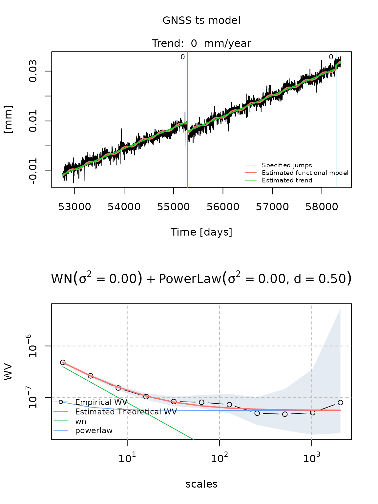
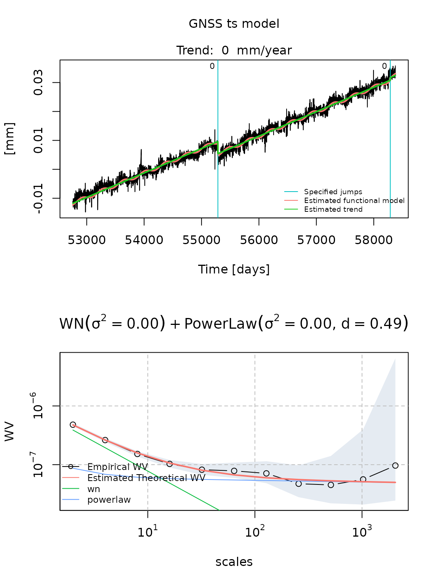
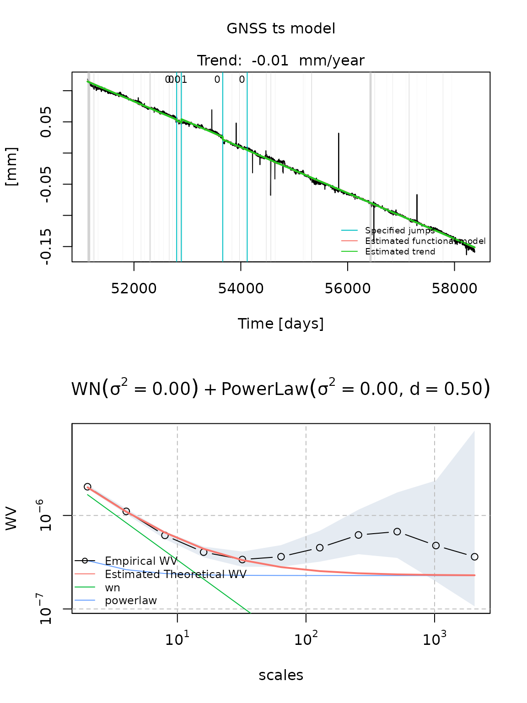
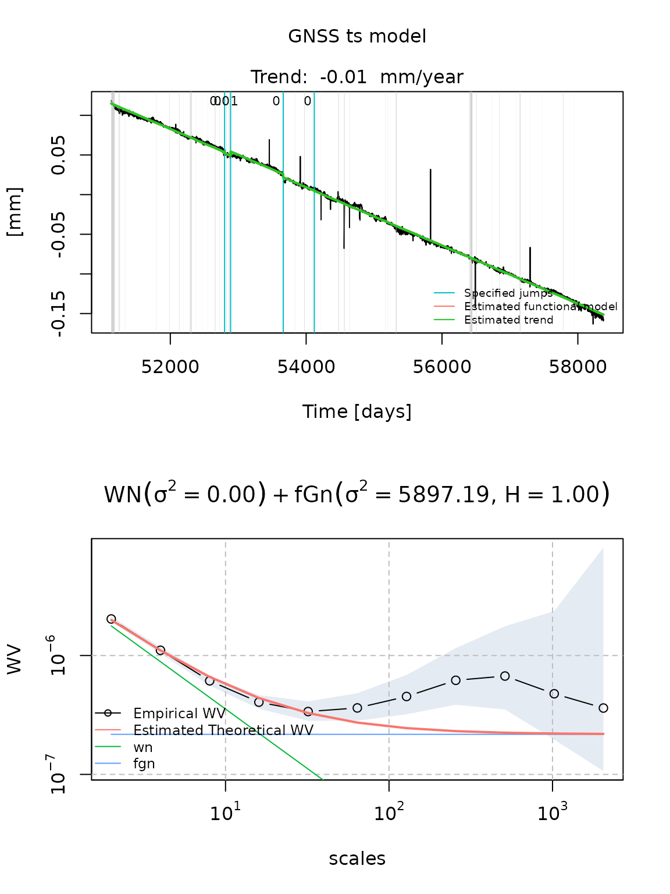
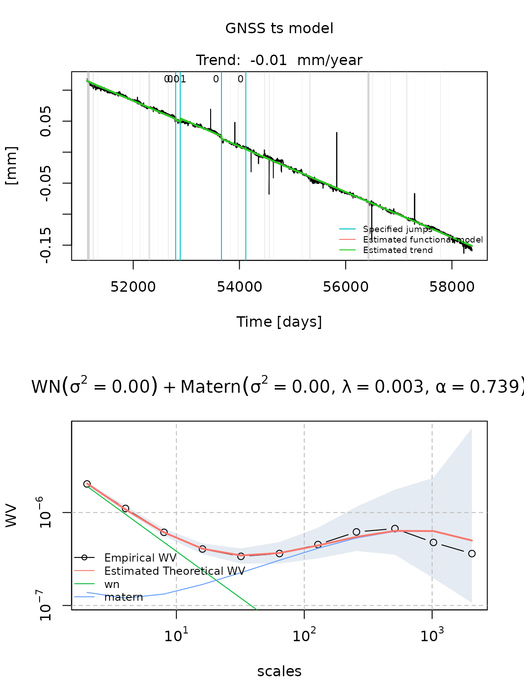
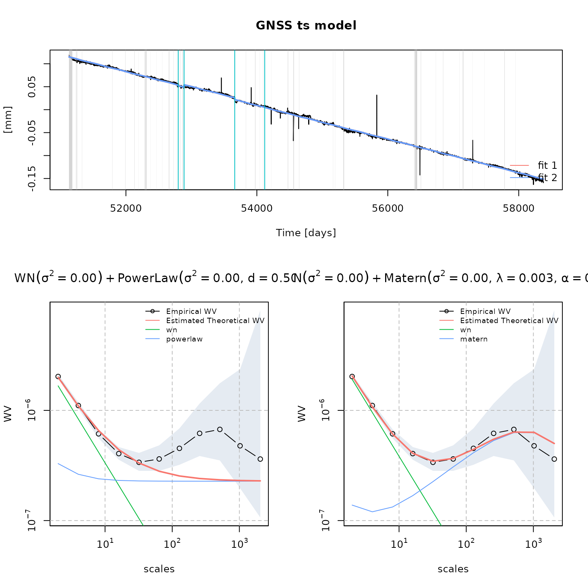

load_estimate_compare_models.Rmd.mom file as a gnssts object
Let us first load the gmwmx package.
library(gmwmx)Consider that you want to estimate a model on data saved in a .mom file located at a specific file_path on your computer.
For example, the corresponding .mom file could have a similar looking:
# sampling period 1.000000
# offset 55285.000000
# offset 58287.770833
52759.5 -0.01165
52760.5 -0.01102
52761.5 -0.01147
...You can import the .mom file as a with the function read.gnssts() as such:
data_dobs = read.gnssts(filename = file_path)Objects created or imported with create.gnss() or read.gnssts() are of class gnssts.
class(data_dobs)## [1] "gnssts"By inspecting the structure of a gnssts object, we observe that gnssts objects specify the time vector, the observation vector, the sampling period and the times at which there are location shifts (jumps).
str(data_dobs)## List of 4
## $ t : num [1:5559] 52760 52760 52762 52764 52766 ...
## $ y : num [1:5559] -0.0117 -0.011 -0.0115 -0.0131 -0.0106 ...
## $ sampling_period: num 1
## $ jumps : num [1:2] 55285 58288
## - attr(*, "class")= chr "gnssts"We can represent the signal as such:
plot(data_dobs$t, data_dobs$y, type="l")The gmwmx package allows to estimate linear model with correlated residuals that are described by a functional model and a stochastic noise model.
More precisely, for the functional model, we consider a linear model which can be expressed as:
\[\begin{equation} \mathbf{Y} = \mathbf{A} {{\bf x}}_0 + \boldsymbol{\varepsilon}, \end{equation}\]
where \(\mathbf{Y} \in {\rm I\!R}^n\) denotes the response variable of interest (i.e., vector of GNSS observations), \(\mathbf{A} \in {\rm I\!R}^{n \times p}\) a fixed design matrix, \({{\bf x}}_0 \in \mathcal{X} \subset {\rm I\!R}^p\) a vector of unknown constants and \(\boldsymbol{\varepsilon} \in {\rm I\!R}^n\) a vector of (zero mean) residuals.
The gmwmx package allows to estimate functional models for which the \(i\)-th component of the vector \(\mathbf{A} {{\bf x}}_0\) can be described as follows:
\[\begin{equation} \mathbb{E}[\mathbf{Y}_i] = \mathbf{A}_i^T {{\bf x}}_0 = a+b\left(t_{i}-t_{0}\right)+\sum_{h=1}^{2}\left[c_{h} \sin \left(2 \pi f_{h} t_{i}\right)+d_{h} \cos \left(2 \pi f_{h} t_{i}\right)\right] + \sum_{k=1}^{n_{g}} g_{k} H\left(t_{i}-t_{k}\right), \end{equation}\]
where \(a\) is the initial position at the reference epoch \(t_0\), \(b\) is the velocity parameter, \(c_k\) and \(d_k\) are the periodic motion parameters (\(h = 1\) and \(h = 2\) represent the annual and semi-annual seasonal terms, respectively). The offset terms models earthquakes, equipment changes or human intervention in which \(g_k\) is the magnitude of the change at epochs \(t_k\), \(n_g\) is the total number of offsets, and \(H\) is the Heaviside step function.
Regarding the stochastic model, we assume that \(\boldsymbol{\varepsilon}_i=\mathbf{Y}_i-\mathbb{E}[\mathbf{Y}_i]\) is a strictly (intrinsically) stationary process and that
\[\begin{equation} \boldsymbol{\varepsilon} \sim \mathcal{F} \left\{\mathbf{0}, \boldsymbol{\Sigma}(\boldsymbol{\gamma}_0)\right\} , \label{eq:model:noise} \end{equation}\]
where \(\mathcal{F}\) denotes some probability distribution in \({\rm I\!R}^n\) with mean \({\bf 0}\) and covariance \(\boldsymbol{\Sigma}(\boldsymbol{\gamma}_0)\).
We assume that \(\boldsymbol{\Sigma}(\boldsymbol{\gamma}_0) > 0\) and that it depends on the unknown parameter vector \(\boldsymbol{\gamma}_0 \in \boldsymbol{\Gamma} \subset {\rm I\!R}^q\). This parameter vector specifies the covariance of the observations and is often referred to as the stochastic parameters.
Hence, we let \(\boldsymbol{\theta}_0 = \left[\boldsymbol{{\bf x}}_0^{\rm T} \;\; \boldsymbol{\gamma}_0^{\rm T}\right]^{\rm T} \in \boldsymbol{\Theta} = \mathcal{X} \times \boldsymbol{\Gamma} \subset {\rm I\!R}^{p + k}\) denote the unknown parameter vector of the model described above.
The gmwmx allows to estimate parameters of a specified functional model as well as parameters of a stochastic model (i.e. \(\hat{\boldsymbol{\theta}} = \left[\boldsymbol{\hat{\boldsymbol{x}}}^{T} \;\; \hat{\boldsymbol{\gamma}}^{T}\right]\)) defined by a combinations of
wn)matern)fgn) andpowerlaw).You can estimate a model using the GMWMX estimator with the function estimate_gmwmx().
The stochastic model considered is specified by a string provided to the argument model_string which is a combination of the strings wn, powerlaw, matern and fgn separated by the character +.
You specify the initialization values for solving the optimization problem at the GMWM estimation step that estimate the stochastic model by providing a numeric vector of the correct length (the total number of parameters of the stochastic model specified in model_string) to the argument theta_0.
You can compute confidence intervals for estimated functional parameters of an estimated model by setting the argument ci to TRUE.
Let us consider a single sinusoidal signal with the jumps specified in the gnssts object and a combination of a White noise and a Power Law process for the stochastic model.
fit_dobs_wn_plp_gmwmx = estimate_gmwmx(x = data_dobs, theta_0 = c(0.1, 0.1, 0.1),
model_string = "wn+powerlaw",
n_seasonal = 1, ci = T)Estimated models are of class gnsstsmodel
class(fit_dobs_wn_plp_gmwmx)## [1] "gnsstsmodel"We can print the estimated model or extract estimated parameters (functional and stochastic) as such:
print(fit_dobs_wn_plp_gmwmx)## GNSS time series model
##
## * Model:
##
## * Functional parameters:
## bias : +0.01201297 +/- 0.020
## trend : +0.00000835 +/- 0.000
## A*cos(U) : -0.00065540 +/- 0.000
## A*sin(U) : +0.00001579 +/- 0.000
## jump : -0.00375807 +/- 0.001
## jump : +0.00156788 +/- 0.001
##
## * Stochastc parameters:
## wn_sigma2 : +0.00000079
## powerlaw_sigma2 : +0.00000025
## powerlaw_d : +0.49990000
##
## * Estimation time: 1.54 s
fit_dobs_wn_plp_gmwmx$beta_hat## bias trend A*cos(U) A*sin(U) jump
## 1.201297e-02 8.351512e-06 -6.553985e-04 1.578605e-05 -3.758074e-03
## jump
## 1.567881e-03
fit_dobs_wn_plp_gmwmx$theta_hat## wn_sigma2 powerlaw_sigma2 powerlaw_d
## 7.916985e-07 2.525867e-07 4.999000e-01We can also plot graphically the estimated functional model on the time series and the Wavelet variance of residuals by calling the plot.gnsstsmodel method on a gnsstsmodel object.
plot(fit_dobs_wn_plp_gmwmx)
We can specify the number of iterations of the GMWMX to compute respectively the GMWMX-1 and GMWMX-2 or other iteration of the GMWMX with the argument k_iter. For example we can compute the GMWMX-2 as such:
fit_dobs_wn_plp_gmwmx_2 = estimate_gmwmx(x = data_dobs, theta_0 = c(0.1, 0.1, 0.1), model_string = "wn+powerlaw", n_seasonal = 1, k_iter = 2)Assuming that you have Hector available on the PATH, an estimation of the model can the be performed using the Maximum Likelihood Estimation (MLE) method implemented in Hector as such:
fit_dobs_wn_plp_mle = estimate_hector(x = data_dobs,
model_string = "wn+powerlaw",
n_seasonal = 1)Similarly we can plot and extract the model parameters of the estimated model:
plot(fit_dobs_wn_plp_mle)
fit_dobs_wn_plp_mle$beta_hat## bias trend A*cos(U) A*sin(U) jump
## 1.200000e-02 8.451006e-06 -6.672690e-04 1.359080e-06 -4.194170e-03
## jump
## 9.071300e-04
fit_dobs_wn_plp_mle$theta_hat## wn_sigma2 powerlaw_sigma2 powerlaw_d
## 7.779727e-07 2.700504e-07 4.854970e-01We can load time series data from the Plate Boundary Observatory (PBO) as gnssts object with PBO_get_station():
cola = PBO_get_station("COLA", column = "dE")Let us consider three potential models for the stochastic model of this signal. More precisely let us consider:
fit_cola_wn_plp = estimate_gmwmx(cola, model_string = "wn+powerlaw",
theta_0 = c(0.1,0.1,0.1),
n_seasonal = 1,
ci = T)
plot(fit_cola_wn_plp)
fit_cola_wn_fgn = estimate_gmwmx(cola, model_string = "wn+fgn", theta_0 = c(0.1,0.1,0.2),
n_seasonal = 1,
ci = T)
plot(fit_cola_wn_fgn)
fit_cola_wn_matern = estimate_gmwmx(cola, model_string = "wn+matern",
theta_0 = c(0.1,0.1,0.1,0.1),
n_seasonal = 1,
ci = T)
plot(fit_cola_wn_matern)
You can compare estimated models with the function compare_fits()
compare_fits(fit_cola_wn_plp, fit_cola_wn_matern)## Warning in compare_fits(fit_cola_wn_plp, fit_cola_wn_matern): Provided fits do
## not esimate the same model.